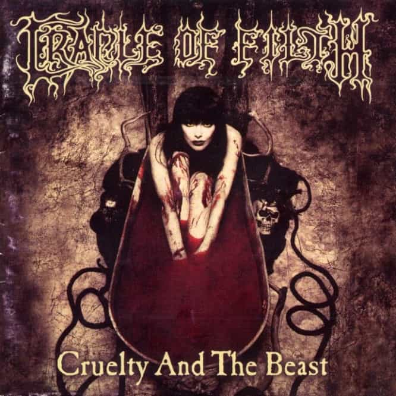
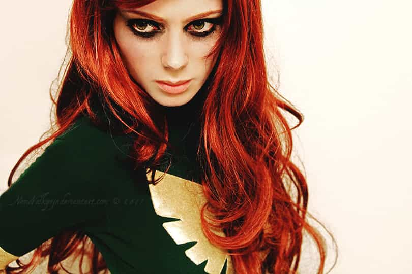

< < < Back
Why Do White Girls Cut Themselves? – Return Of Kings
First, I’d like to explain the provocative headline to this article. Self-mutilation is a white girl problem that is encouraged by feminism, yet another example of how feminism is overall harmful to humanity. How is it encouraged by feminism, you ask? Because feminists deny gender differences.
According to Dr. Leonard Sax in his column “Sax on Sex” which runs in Psychology Today, the gender differences between male and female self-harm are minimized by the APA and many studies of self-injury. Dr. Drew Pinsky, when interviewed by Oprah Winfrey about cutting, alluded the same, adding the aphorism, “Boys act out, girls act in.” Leaving the absolute validity of Pinsky’s statement aside for a moment, let’s at least admit that there are significant qualitative and quantitative differences between male and female self-injury, even if it hurts feminist feelings. Some cutting is associated with legitimate trauma, and some is definitely not, as I will try to prove.
My Qualifications
I have experience with several cutters, as most men who regularly have lady-friends do. One case: we were teenagers, in a long-term relationship throughout high school. She liked to cut herself and play with the blood while writing bad poetry and drawing looney pictures. I didn’t like the cutting at all, and I ordered her to stop. Most of the time, withdrawing my attention and affection worked in preventing the cutting. She would call in the morning and confess her late night urges to cut, and her late night recollection of my orders not to cut, and proudly tell me that she refrained.
Later, another long-term relationship featured a girl who was destroying herself with drugs, and physically endangering herself within drug culture. I again ordered her to stop, threatening to withdraw my affections and relations. This again worked for the most part, except for a few slip-ups over the years. I am tempted to lump these two girls’ psychologies together for reasons that you will understand as I share my experiences and thoughts.
I have read the professional opinions on cutting, and I find them helpful, but often lacking. These professionals have not had to deal with cutters like I have. They did not get to know every single intimate hidden detail about these girls, like I did. Professionals have not had the kind of access I had to cutters, where I peered into their souls and was actually able to help her all on my own, without so much as a high school diploma. I also know how much girls lie on surveys of any kind, no matter how secret or helpful their comments supposedly are.
So why do girls cut? Here are some of my theories.
Trauma Vs Faking Trauma
Let me start out by reiterating my lack of qualifications to discuss cutting universally (from a medical standpoint). Many professionals point to trauma as a major association with self-mutilation. When it comes to this aspect, I am not qualified. The girls I have experience with did not suffer any trauma. They were typical suburbanite coddled white girls with fathers and mothers who did not seem to have any abusive capacities. On another note, I also know that it is a well documented fact that people fake symptoms of PTSD and other mental illnesses. This is known as “malingering” and can be researched further on your own. These two aspects of cutting are not my focus or concern here.
Attention And Boredom
My first impulse is to pin cutting on boredom and attention seeking. Yes, I know girls usually cut in secret, and I know that they hide it under their clothes. This does not mean they aren’t doing it for attention, because perhaps they do not want the attention of everyone. They want delayed gratification of their desire for attention. Perhaps they just want attention from a certain person, even if she is unsure of exactly who it is that she’s seeking in her life. Once upon a time, I believe I was that person a cutter was seeking, and I was able to get her to stop cutting. What was I to her? I was a dark, illiberal, dominant male, who occasionally got into trouble, and always took her on wild adventures. Although going to Marilyn Manson concerts gave her the urge to cut again, she didn’t. Manson and his followers are often cutters, which leads me to my next theory:
Consumerism

Do some girls cut because it is fashionable? My experience in subculture, again first-hand, leads me to conclude that many self-destructive “goth” or “emo” behaviors are nothing more than extra “guyliner,” a passing fad or a signaling of in-group orientation. Indeed, most cutters stop once they become adults, which is typically about the same time they stop wearing chain wallets and black nail polish. It is also tempting to point out that young white girls are the prodigal materialistic consumers, but their consumerism (although perhaps not their funding) is arguably exceeded by blacks, and blacks don’t cut, so to speak. So consumerism is very arguable as a cause for much cutting.
Suffering Is Important and Good

I mentioned that girls may be seeking something that they modernly do not know exists. Do girls need suffering? Are children too coddled and protected? Many countries in Europe have outright banned spankings. Do girls in Europe cut more than girls in the U.S.? I don’t know. But I do know that suffering is important, and often good. And I think most people unknowingly or secretly agree.
In the intro I mentioned the girl who was destroying herself with drugs and drug culture. It turned out that one day she realized she liked to be spanked. Although I had previously given her a few swats, she suddenly wanted me to try spanking her without any associated eroticism, as a means of punishment for disobeying me. I told her that a good hard spanking was always on the table even before she brought it up, but that I am generally against spanking adults as a form of discipline. Was I wrong?
I have recently read some material about domestic discipline (i.e., spanking your wife). Apparently, as little as 100 years ago spanking your spouse was publicly discussed, normal and accepted. By Christians, even. Perhaps girls really just need a good spanking sometimes from a man they respect and love?
I have also seen children act up in order to get attention, accepting even a spanking and the subsequent lectures as acceptable forms of attention, leaving their rooms after a spanking with a joy and peace that seems to be the opposite response to a spanking. In fact, they often appear happier and less cranky after their spankings from a good parent.
Trauma Or Pastime?
I recently considered some females in the context of a young man seeking an eventual religious marriage. Here is a video I found while considering his playing field, which spurred this article about cutting, because during the video I was easily able to identify the Christian rockers as mentally unstable cutters, without ever having seen or heard of them before, without them even mentioning cutting yet. All I had to do was look at how they presented themselves, listen to what they said, and think about what stereotypes were most probable. I believe these girls fit into the categories I’ve discussed today: nothing traumatic happened to them but they cut nonetheless to fill a mysterious void within them.
I hope I’ve helped with my brutal honesty, unlike feminists who encourage cutting with their dangerous delusions about sex and gender, which harm everyone medically, economically, spiritually, and physically. If you have a cutter in your life, the first thing to do is realize that they are cutting. The latest cutter I caught tried to tell her parents it happened in the blackberry bushes. I told her dad, “Nuh-uh. She’s cutting.” Turned out I was right. She is supposedly doing better. I will have to check with him to see what they did to help her.
My experience has led me to believe that being a dominant, masculine, illiberal, aloof asshole-who-cares has some merit when it comes to helping girls avoid self-destruction. When it comes to a father dealing with a daughter who is cutting, I don’t know. Perhaps it would be best to seek medical attention, and an experienced male spiritual counsellor, simultaneously. In my experience and in reading through the history books as well as reading peer-reviewed studies of the matter, the professional psychiatry community harms more people than the spiritual community. Just look up “religion is healthy” and you’ll see the evidence you need to save your daughters from the postmodern malaise ruining Western civilization.
Read Next: What American Female Mental Issues Mean For You


{kind=link}
{kind=link}
{kind=link}